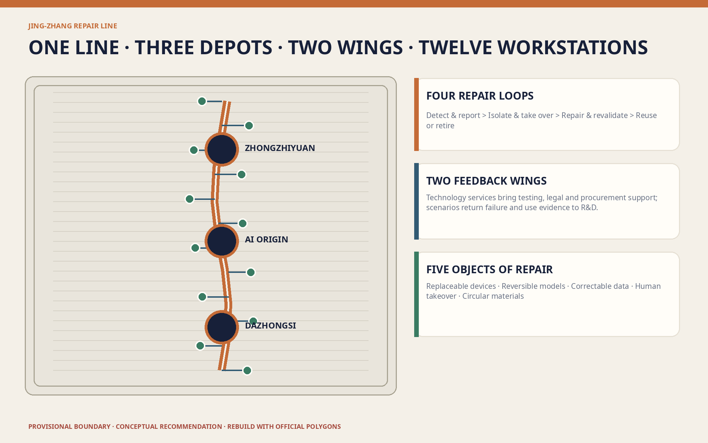
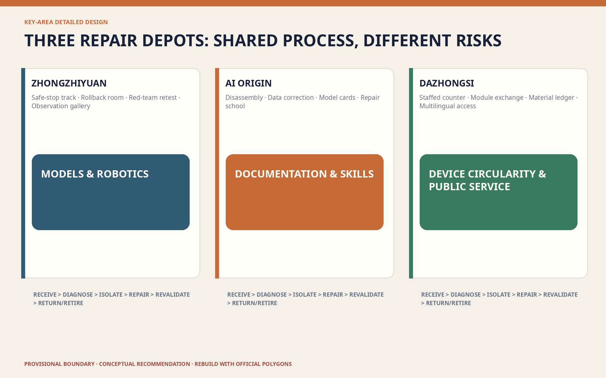
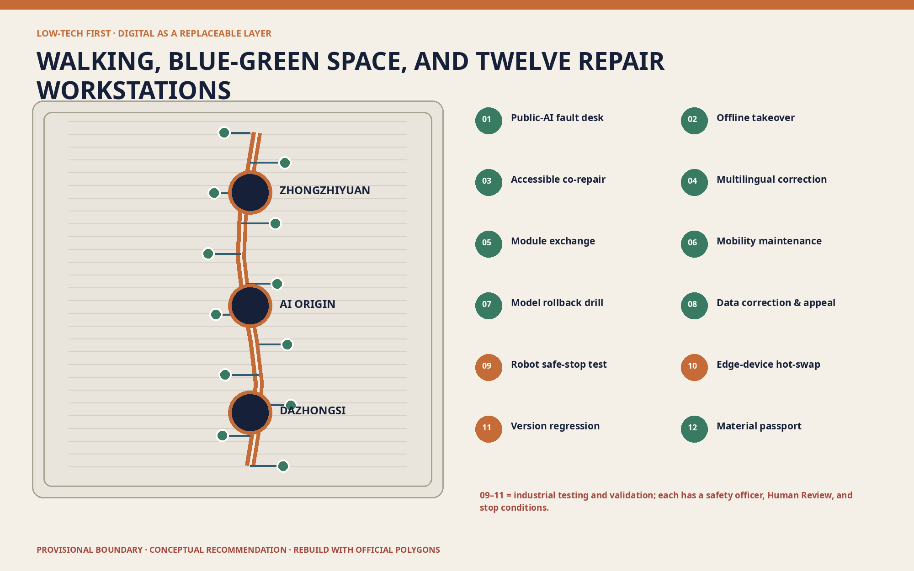
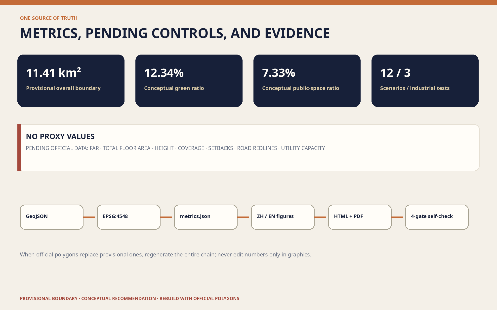

11.41 km²Provisional overall boundary
12.34%Conceptual green ratio
7.33%Conceptual public-space ratio

Three-level scope
Key areas
Land-use plan
Walking and cycling
Blue-green public space
Buildings
Renewal projects
AI scenarios
Core metrics
Task coverage
Self-check status
Sources
Assumptions

AI scenarios
- 01 Fault desk
- 02 Offline takeover
- 03 Accessible co-repair
- 04 Multilingual correction
- 05 Module exchange
- 06 Mobility maintenance
- 07 Model rollback
- 08 Data correction
- 09 Robot safe stop
- 10 Edge hot-swap
- 11 Version regression
- 12 Material passport


Sources / Assumptions
The announcement and taskbook confirm tasks; provisional boundaries support generation and discussion only; international cases contribute mechanisms only. See sources.json and assumptions.json.